オプションの神様は突然に
——海外オプション取引で「怖い」が「わかった」に変わる日——
はじめに
第1章 オプションって何だ？——権利の取引、はじめの一歩
1-1 ある日の会議室で
1-2 オプションとは「権利」を売買する仕組み
1-3 4つの基本ポジション
第2章 オプション取引のメリット——「少額・下落耐性・戦略自由」
2-1 試算してみた
2-2 メリット①——少額から始められる
2-3 メリット②——下落局面でも稼げる
2-4 メリット③——損失を限定できる（買いの場合）
2-5 メリット④——戦略の自由度が高い
第3章 オプション取引のデメリット——「時間・損失・為替・税金」の壁
3-1 時間が価値を溶かす
3-2 「売り」は損失無限大のリスク
3-3 掛け金ゼロに見える戦略のワナ
3-4 海外特有のリスク——為替・税金・業者
第4章 安全に始めるための5つの鉄則——「守る」から「増やす」へ
4-1 鉄則１——「買い」から始める
4-2 鉄則２——余剰資金で少額から
4-3 鉄則３——デモトレードで練習する
4-4 鉄則４——満期日に余裕を持たせる
4-5 鉄則５——事前にルールを決める
第5章 カバードコール——「持っている資産が働き始める」
5-1 家賃収入と同じ発想
5-2 カバードコールの具体的な仕組み
5-3 リスクとトレードオフ——株価急騰時の損失
5-4 暴落時の3つの対処法
おわりに
01はじめに
「貯金をしているのに、なぜか将来が不安——。」
そんな気持ちを抱えながら、今日も会社に向かう人がいる。
主人公の竹田たける、28歳。
都内のIT企業に勤める普通の会社員だ。
毎月コツコツ貯金をして、つみたてNISAも少しだけ始めた。
でも、なんとなく物足りない。
「もっと資産を増やしたいけど、リスクが怖い。」
「株は上がるだけじゃなく、下がることもある。」
「自分には難しすぎる投資は無理だ。」
そんなたけるが出会ったのが、オプション取引という世界だった。
最初は「オプション？なんか難しそう」と思っていた。
コールだのプットだの、専門用語が飛び交って、近づきがたい印象があった。
それでも、少しずつ学んでいくうちに気づいた。
「あ、これって保険と同じ考え方じゃないか。」
「損失をあらかじめ限定できるなら、そんなに怖くないかも。」
この本は、たけると一緒にオプション取引の世界を冒険する物語だ。
難しい数式は出てこない。
代わりに、誰もが知っているたとえ話でやさしく解説する。
「学ぶ → 守る → 増やす」——この3ステップを歩めば、誰でもオプション取引を自分の武器にできる。
さあ、たけると一緒に、新しい扉を開けよう。
はじめに・主人公たけるの紹介
02第1章 オプションって何だ？——権利の取引、はじめの一歩
1-1 ある日の会議室で
第1章・オプションとの出会い
「たけるくん、最近なにか投資してる？」
昼休みの会議室。
窓から差し込む陽光の中、ひとみ先生——本名は城島ひとみ、 社内随一の投資通——がコーヒーカップを傾けながら聞いた。
「えっ、つみたてNISAは少しやってます。
でも、それ以上はちょっと……」
たけるは正直に答えた。
「もっと増やしたいと思ってる？」
「そりゃあ思ってますけど、リスクが怖くて。
株は下がることもあるし、FXは難しそうだし。」
ひとみ先生は少し微笑んだ。
「じゃあ、オプション取引を知ってる？」
「オプション……？なんか、プロがやるやつですよね。
自分には難しそうで」
「そんなことないよ。
コールとプットの2種類を理解するだけで、基本は掴める。
むしろ、うまく使えば損失を限定しながら稼げる、とても合理的な仕組みなんだよ。」
たけるは少し前のめりになった。
「損失を限定しながら稼げる……？どういうことですか？」
その問いが、たけるのオプション人生の始まりだった。
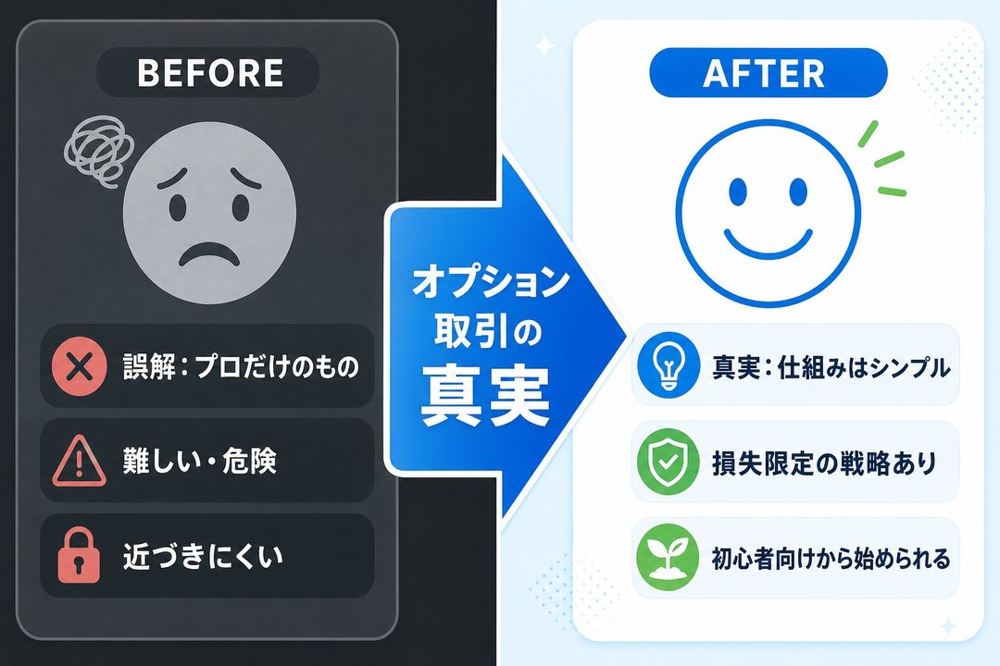
オプション取引の誤解と真実
1-2 オプションとは「権利」を売買する仕組み
「まず基本から話すね。
オプション取引とは、『将来、ある決められた値段で売買する権利』をお金で売り買いする仕組みなの。」
ひとみ先生は手元のメモに書き始めた。
「権利……って、具体的にどういうことですか？」
「たとえば——コンサートのチケットを想像してみて。
人気アーティストの来年のライブチケット、今は5000円。
でも本番になったらきっと値上がりして、10000円になるかもしれない。
だから今のうちに、"5000円で買える権利"を1000円で買っておく。
それがコールオプションのイメージに近いの。」
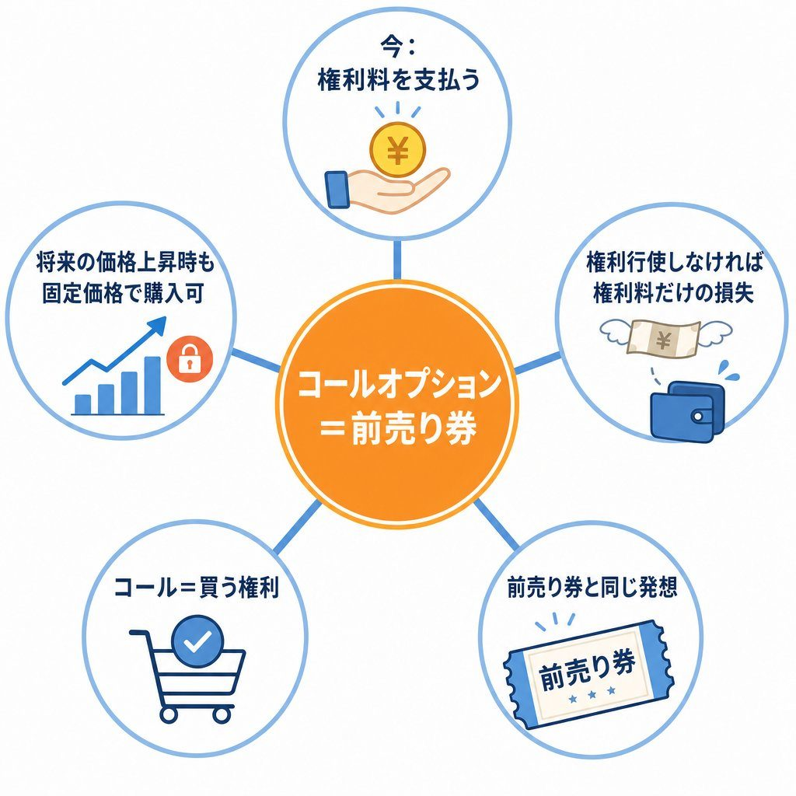
コールオプション＝前売り券の仕組み
「なるほど！だから"コール＝買う権利"なんですね。
じゃあプットは？」
「プットは逆。
"売る権利"。
こっちは保険に近い。
たとえば、今100万円の車を持っているとする。
でも将来、価値が半分になるかもしれない。
そこで保険（プット）を掛けておけば、実際に半値になっても70万円で売れる権利を確保できるの。」
「保険！確かにそれなら怖くないですね。」
「そう。
プット＝下落への保険というイメージで覚えると入りやすい。」
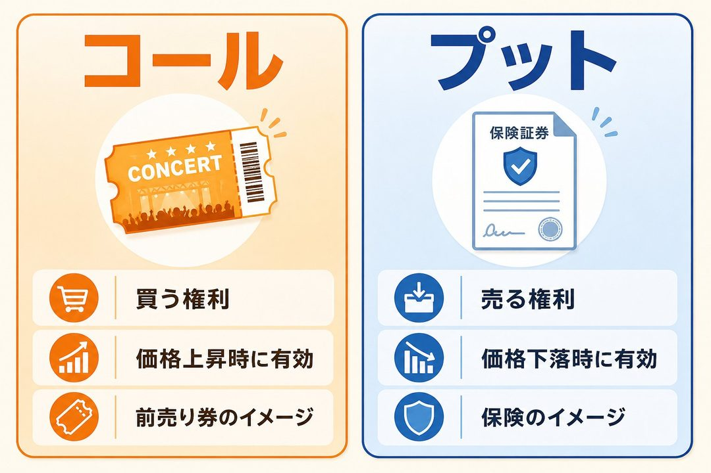
コールとプットの違い
1-3 4つの基本ポジション
「コールとプットには、それぞれ"買い"と"売り"があって、合計4つのポジションがあるの。」
ひとみ先生は4つの箱を描いた。
「コールの買い——価格が上がると思うとき。
損失はプレミアム（権利料）だけ。
プットの買い——価格が下がると思うとき。
これも損失はプレミアムだけ。
コールの売り——価格が上がらないと思うとき。
プレミアムをもらえるが損失は大きくなりうる。
プットの売り——価格が下がらないと思うとき。
同じくプレミアムをもらうが損失リスクもある。」
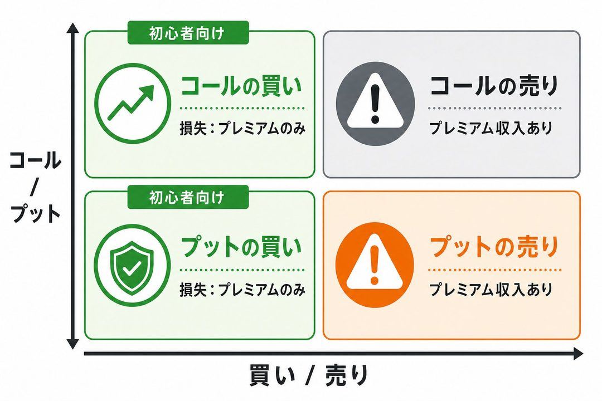
4つの基本ポジション一覧
「初心者は買いから始めましょう。
損失が限定されるから安心して学べる。
売りは仕組みをきちんと理解してから、ステップアップで挑戦すればいいわ。」
たけるはメモを取りながらうなずいた。
「まずはコールとプットの買いを理解する。
それだけでも世界が広がりそうです！」
「そうそう、その感覚が大事。
まず理解してから動く——それが一番のリスク管理だよ。」
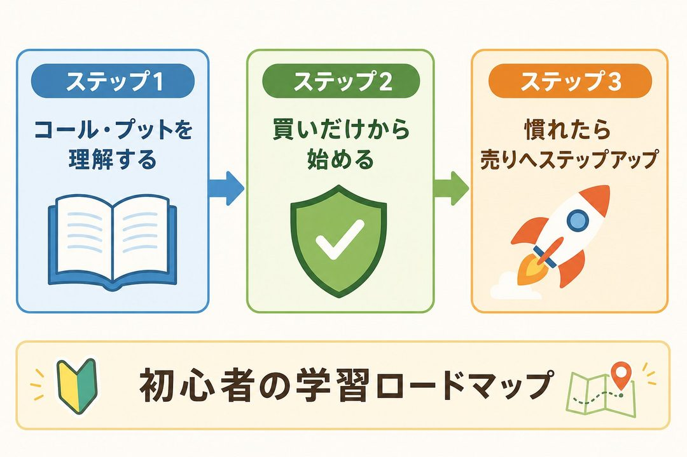
初心者の学習ステップ
03第2章 オプション取引のメリット——「少額・下落耐性・戦略自由」
2-1 試算してみた
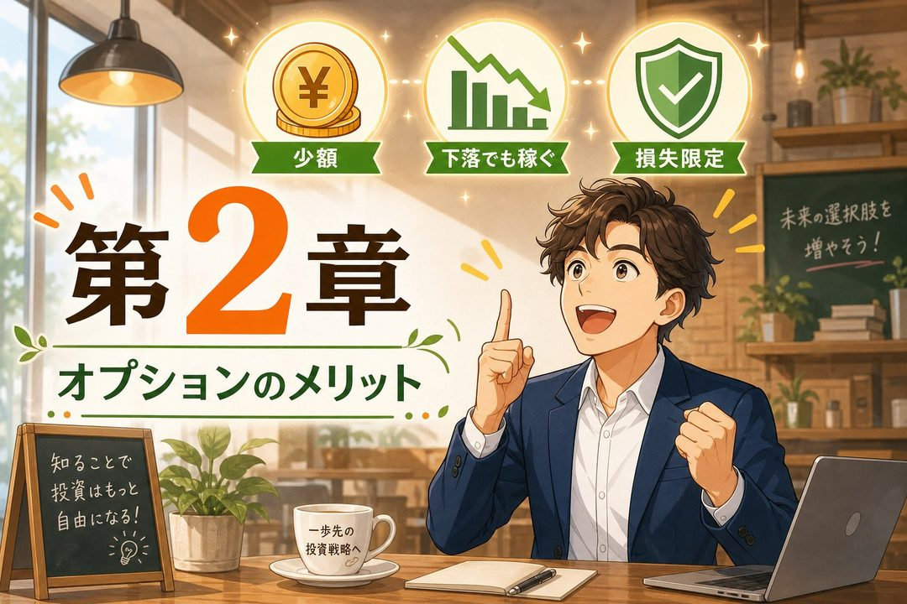
第2章・オプションのメリットに目覚めるたける
翌日の昼休み。
たけるはスマートフォンで「オプション取引 メリット」と検索しながら、ひとみ先生を待っていた。
「お待たせ！昨日のことを調べてたの？」
「はい、少し。
でも正直、メリットとデメリットが混ざってよくわからなくて。
改めて教えてもらえますか？」
「もちろん。
まずメリットから整理しよう。」
2-2 メリット①——少額から始められる
「普通に株を買おうとしたら、たとえばAppleの株なら今で1株2万円以上する。
でも、そのApple株のオプションなら数千円から買えることもあるわ。」
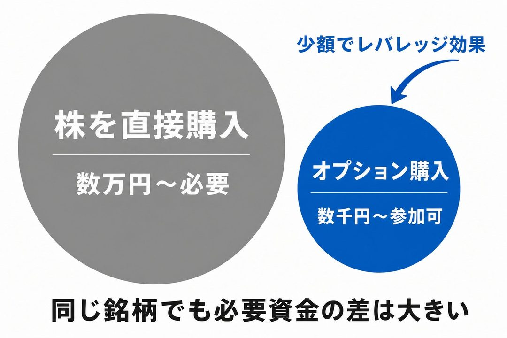
株の直接購入とオプションの資金比較
「えっ、それは大きな違いですね！
少ない資金でも参加できる。」
「そう。
これがレバレッジ効果。
少ない資金で大きな動きを取りに行ける。
ただし、その分リスクも増幅するから注意は必要。
初心者は小さなポジションから始めるのがベター。」
2-3 メリット②——下落局面でも稼げる
「株の難しいところは、"下がると損しかしない"イメージがあること。
でもオプション——特にプットの買い——は、下落相場でも利益が取れる。」
「下がっても稼げる……！それはインデックス投資じゃできないことですね。」
「そう。
相場がどちらに動いても戦える武器があると、精神的にもラクになるわ。
持ち株が下がるときのヘッジ（保険）にも使えるしね。」
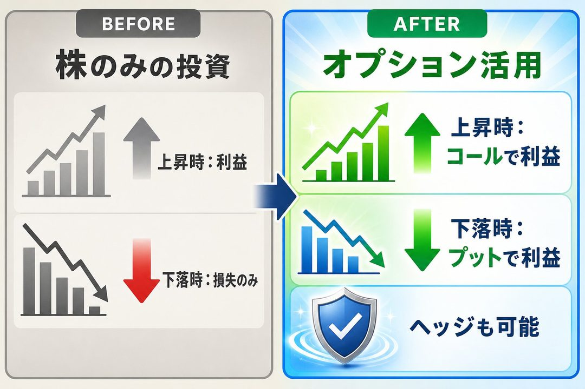
株だけの投資 vs オプション活用
2-4 メリット③——損失を限定できる（買いの場合）
「これが初心者にとって一番大切なポイント。
オプションの買い手は、最大損失がプレミアム（権利料）だけに限定されるの。」
「株だと、買った値段からゼロになるまで下がったら全部損ですよね。
でもオプションの買いなら、支払ったプレミアム以上の損はない？」
「その通り。
たとえば1万円のプレミアムを払ってコールを買ったとする。
最悪の場合でも損失は1万円だけ。
株が暴落しても、オプションの権利を行使しなければいい——それだけ。」
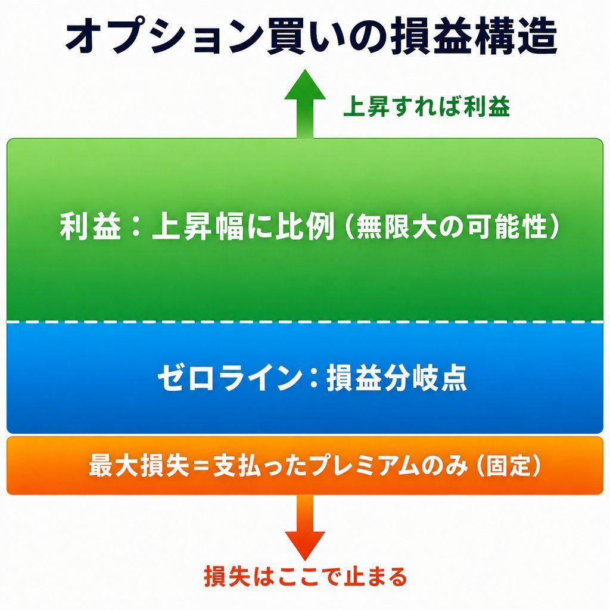
オプション買いの損失限定構造
「なるほど！これなら最悪のシナリオを事前に把握できる。」
「そう、リスクが見える投資なんだ。
これがオプション買いの最大の魅力だよ。」
2-5 メリット④——戦略の自由度が高い
「さらに、オプションは組み合わせ次第でいろんな戦略が作れる。
上がる・下がる・横ばい——どんな相場でも合う戦略が存在するのよ。」
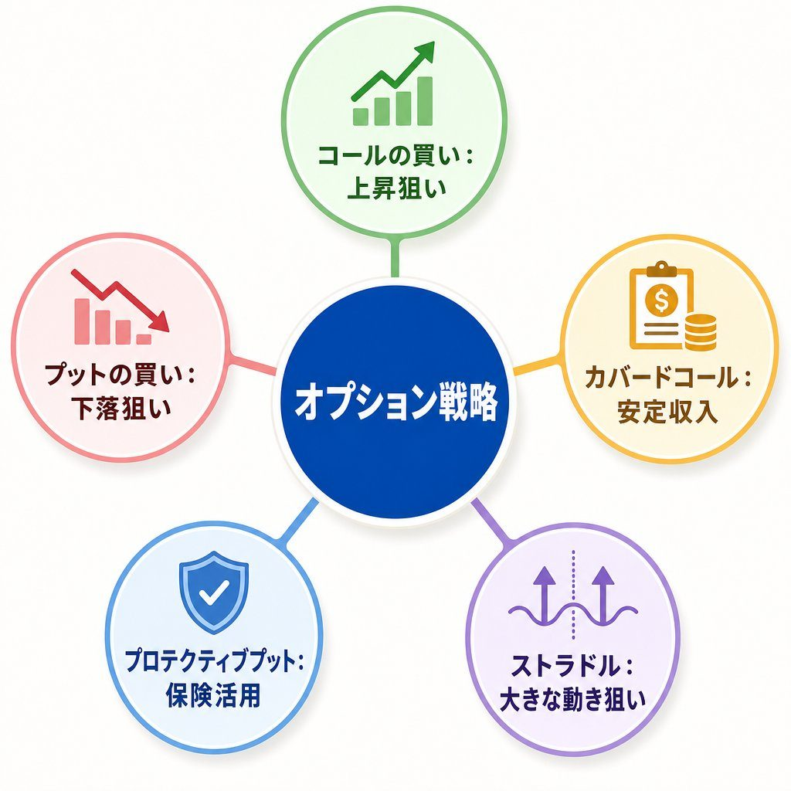
オプション戦略の多様性
「こんなに戦略があるんですね……。
正直ちょっと圧倒されますけど、最初は買いだけ覚えればいいんですよね。」
「そう！焦らなくていいわ。
1つずつ武器を増やしていけばいい。
今はコールの買い・プットの買いをマスターするだけで充分。」
たけるは高揚した気持ちで、自分のスマホにメモを取り始めた。
「少額で始められて、下落でも稼げて、損失が見える——。
なんか、すごく合理的な仕組みですね。」
「その感覚を大切にして。
ただ——」とひとみ先生はコーヒーを一口飲んだ。
「メリットと同じくらい、デメリットもちゃんと知っておく必要があるわね。」
たけるの表情が少し曇った。
「……そうですよね、もちろんリスクもありますよね。」
「次回は、オプションの怖い部分を正直に話すね。
それを知った上で戦略を立てれば、ずっと安全に使えるから。」
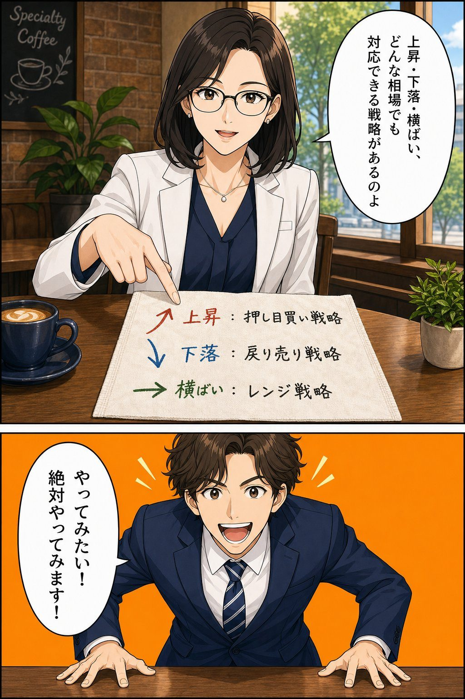
04第3章 オプション取引のデメリット——「時間・損失・為替・税金」の壁
3-1 時間が価値を溶かす
第3章・デメリットの真実を知るたける
「じゃあ、今日は怖い話をしましょう。」
ひとも先生の言葉に、たけるは少し身構えた。
「オプションにはタイムディケイ——時間価値の減少——という概念があるの。
買ったオプションは、時間が経つだけで価値が目減りするの。」
「株みたいに"持ち続けていれば回復する"は通じないんですか？」
「通じないの。
オプションには満期日がある。
満期になったら価値はゼロ。
しかも、満期に近づくにつれて、時間価値の減少スピードが急加速する。
これを専門用語でシータ（Theta）というのよ。」
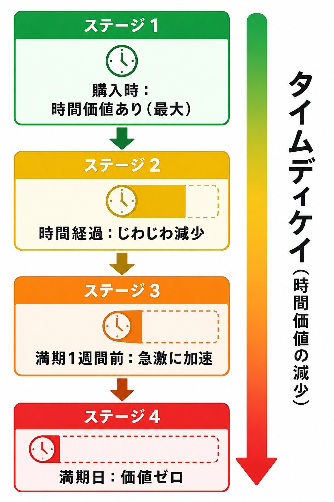
タイムディケイのしくみ
「つまり、ただ待っているだけで損する可能性がある……。」
「そう。
だからタイミングが重要。
「いつ買うか」「いつ売るか（権利を行使するか）」を考えることが必要。 早めに利益確定するか、余裕を持った満期日のオプションを選ぶことが大切よ。」
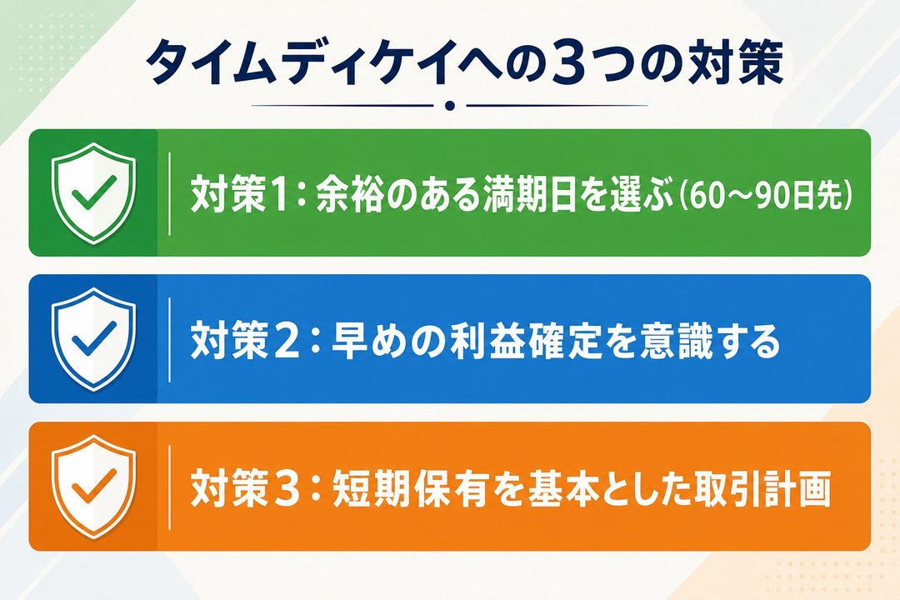
タイムディケイ対策の考え方
3-2 「売り」は損失無限大のリスク
「次に、これは絶対に頭に入れておいてほしいこと。
オプションの売り——特に裸の売り——は、損失が理論上無限大になりうるのよ。」
たけるは思わず声を上げた。
「む、無限大……！？」
「株価が急騰すると、コールの売り手は"行使価格で株を渡す義務"を負う。
その差額が損失になる。
株が10倍になれば、損失も10倍になる計算。」
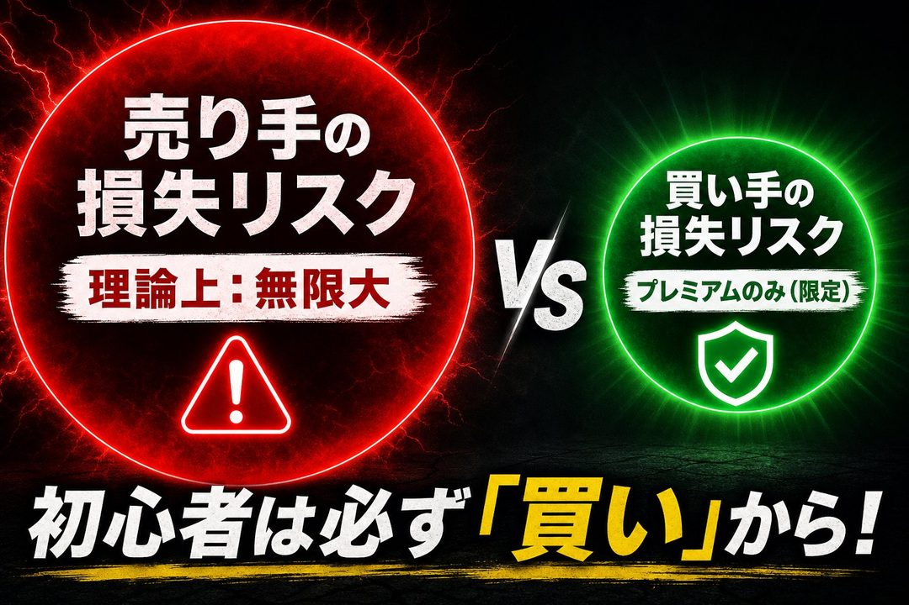
オプション買いvs売りのリスク比較
「だから初心者は、まず買いしかやらないと決めておくべき。
売りは仕組みを完全に理解して、リスク管理ができるようになってからのステップアップすればいい。」
「はい！買いだけから始めます。
絶対に。」
3-3 掛け金ゼロに見える戦略のワナ
「"ゼロコスト戦略"というのがあるわ。
コールを買って、同時にプットを売る——みたいな組み合わせで、一見タダに見える。
でも実際はプットの売りリスクを背負っているから、タダじゃないんだけどね。」
「"ゼロコスト"って聞いたらいいことしかないように聞こえますが……裏があるんですね。」
「そう。
見た目の複雑さに惑わされないこと。
シンプルな買い戦略から始めるのが、結局一番安全だわ。」
3-4 海外特有のリスク——為替・税金・業者
「次は、海外のオプション取引ならではのリスク。
大きく3つあるわ。」
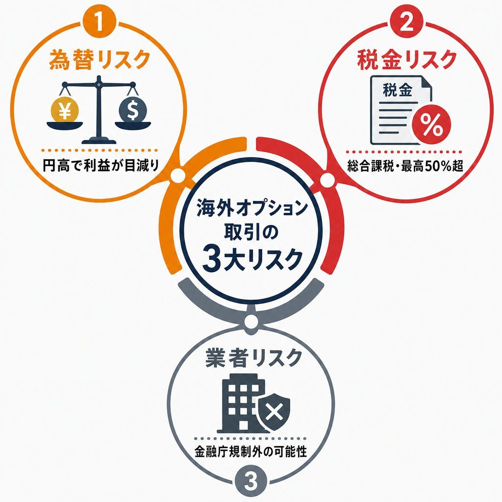
海外オプション取引の3大リスク
「まず為替リスク。
米ドル建てで利益が出ても、円高が進むと円換算の手取りが減る。
たとえば、1ドル150円のときに1000ドルの利益を出した。
でも決済時に1ドル120円になっていたら……。」
「12万円じゃなくて、15万円のはずが……計算が変わってきますね。」
「そう。
為替ヘッジを考えるか、あるいは為替変動も含めた計算でトレードすることが大切よ。」
「次に税金。
海外業者でのオプション取引の利益は、日本の税制では総合課税の雑所得になる。
利益が大きければ、税率が50%を超えることもあるの。
国内業者なら申告分離課税で20.315%なのに——。」
たけるは驚いた。
「えっ、利益の半分が税金に？それはキツい……。」
「だから利益計画を立てるとき、税金コストも必ず考慮する。
場合によっては国内業者経由のオプションも選択肢に入れる価値があるわ。」
「最後に業者リスク。
海外の証券会社は日本の金融庁の規制を受けないから、万が一のとき保護が薄い。
信頼できる規制当局（SEC・FINRAなど）に登録されているかを確認すること。」
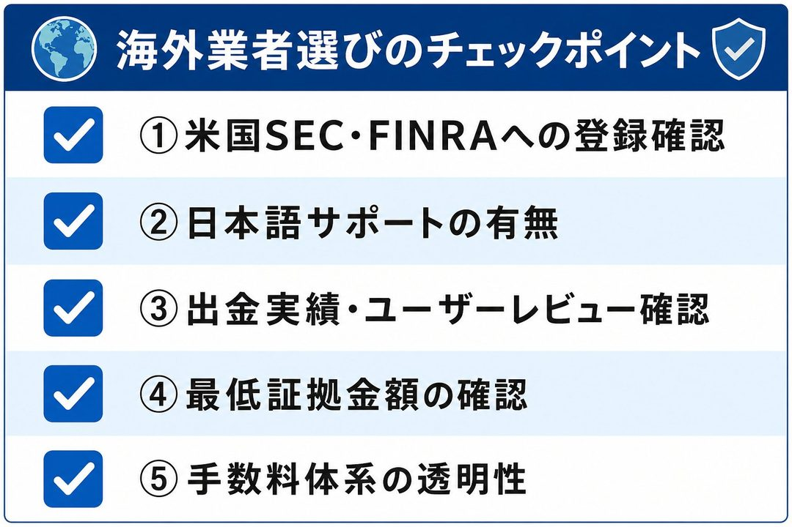
海外業者選びのチェックポイント
たけるは少し頭を抱えた。
「デメリット、けっこう多いですね……。
これを全部クリアしないといけないの？」
「いや、全部を一度に解決しなくていい。
次の章で、初心者がリスクを回避しながら始める方法を話すね。
デメリットを知ることが、安全に始めるための第一歩だから。」
その言葉に、たけるは少し安心した表情を見せた。
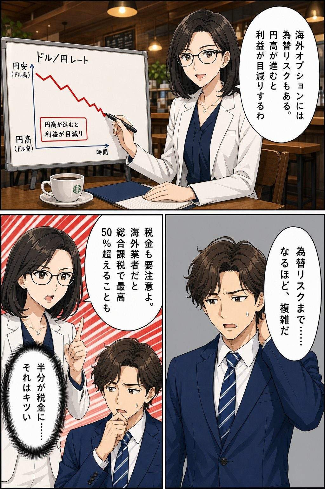
05第4章 安全に始めるための5つの鉄則——「守る」から「増やす」へ
4-1 鉄則１——「買い」から始める
第4章・安全に始める方法を学ぶたける
「前回はデメリットをたくさん話したね。
怖くなった？」
「少し……でも知れてよかったとも思います。」
「それが正解の反応。
じゃあ今日は、そのリスクをどう乗り越えるかを話しましょう。
まず1つ目の鉄則——絶対に買いから始める。」
「さっきも言ってましたね。
損失がプレミアムだけだから。」
「そう。
最悪どうなるかが事前にわかる投資は、精神的に強いわ。
コールの買い・プットの買いだけで、十分に戦える。
売りは慣れてから。」
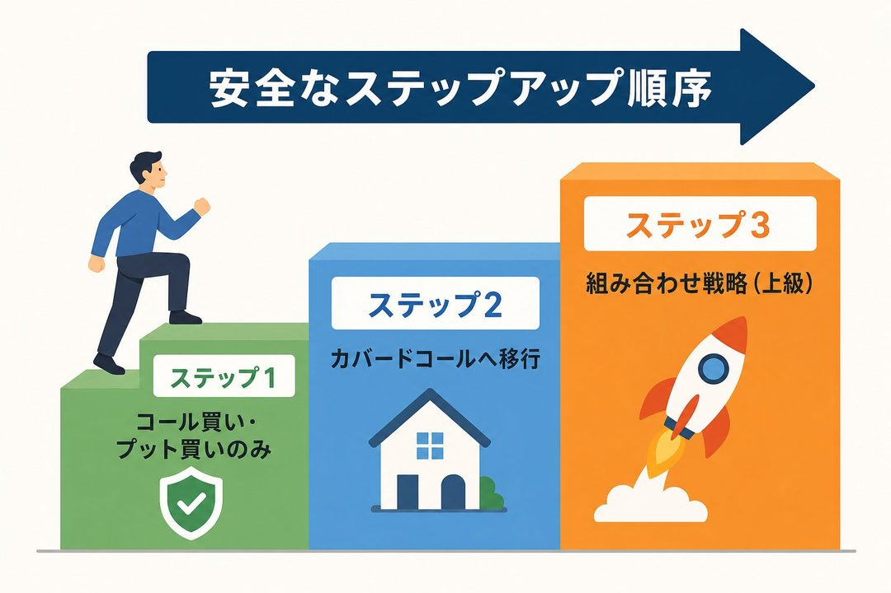
オプション取引の安全なステップアップ順序
4-2 鉄則２——余剰資金で少額から
「2つ目——絶対に余剰資金だけでやる。
生活費・緊急資金には絶対に手をつけない。
失っても生活が変わらないお金だけで投資すること。」
「それは株でも同じ原則ですね。」
「そう。
でもオプションは特に大切。
タイムディケイがあるから、最悪ゼロになることも覚悟する。
余剰資金だから、精神的にも冷静な判断ができる。」
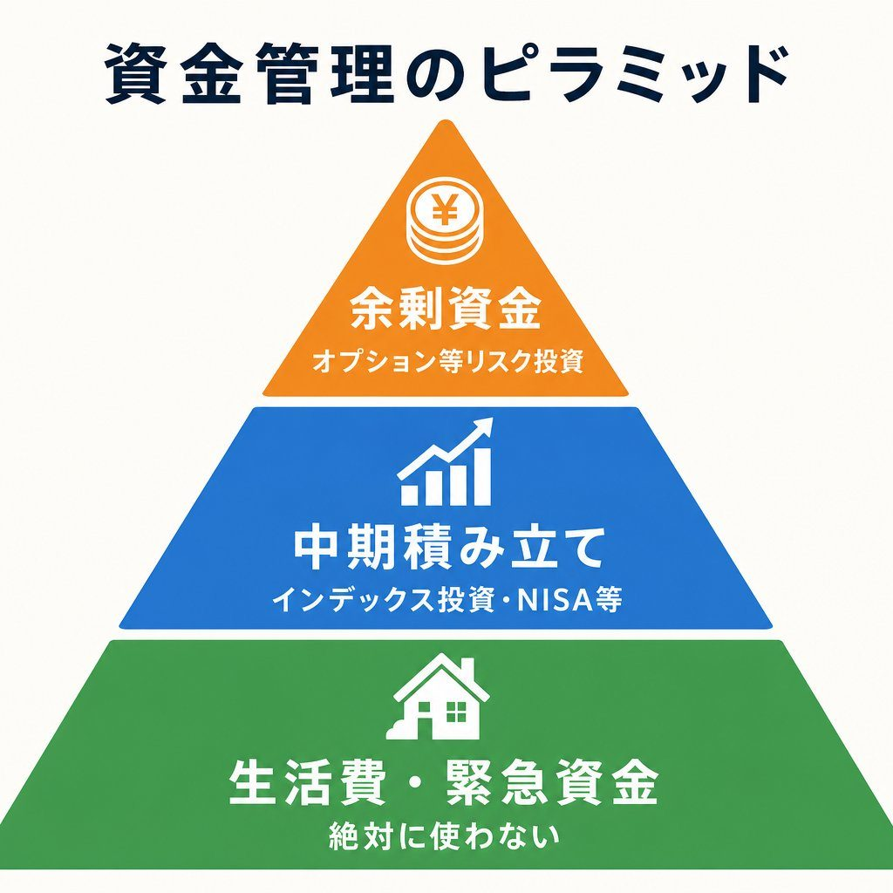
投資に使っていいお金の優先順位
「毎月の投資に使える余剰資金の10〜20%程度で始める。
最初は小さく、学びながら徐々に増やす。
これだけで多くのリスクが回避できるわ。」
4-3 鉄則３——デモトレードで練習する
「3つ目——実際に資金を入れる前にデモトレードを経験する。
多くの海外証券会社はデモ口座を提供している。
仮想資金で取引感覚を掴むことができるの。」
「実際のお金を使わずに練習できるんですね！それは心強い。」
「デモ期間中に覚えること:
オーダーの入れ方、満期日の管理、タイムディケイを実感すること。
3〜6ヶ月のデモ経験があれば、最初から実弾でやるより格段に安心して始められるわ。」
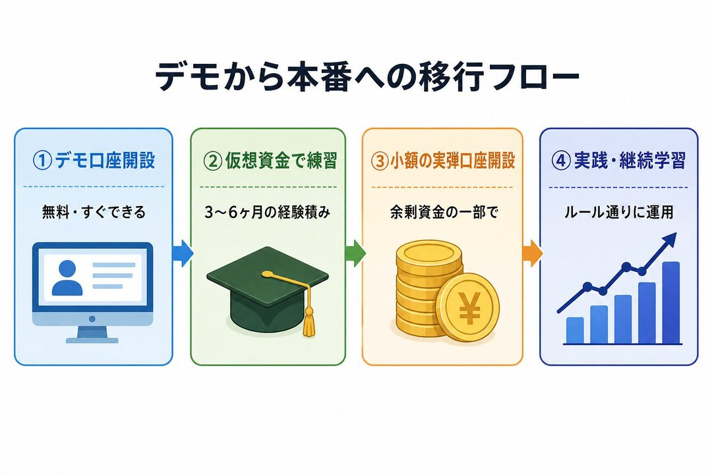
デモトレードから本番への移行フロー
4-4 鉄則４——満期日に余裕を持たせる
「4つ目——満期日の設定は余裕を持つ。
タイムディケイは満期直前に急加速するから、直近の満期日のオプションは初心者には危険。」
「どれくらい余裕があればいいですか？」
「最低でも30日以上、できれば60〜90日先の満期日を選ぶ。
長いほどタイムディケイの影響が小さく、相場が動く時間的余裕もあるわね。」
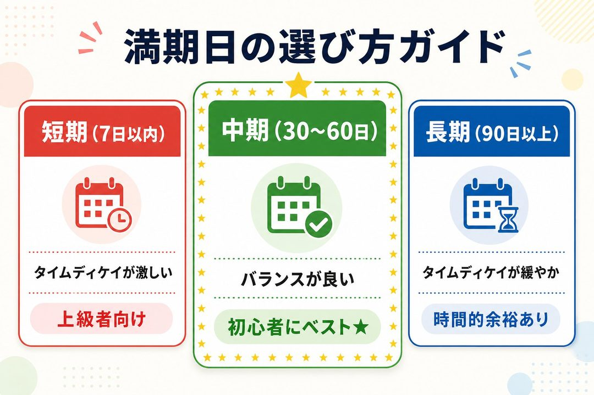
満期日の選び方
4-5 鉄則５——事前にルールを決める
「最後——これが全ての鉄則の中で一番大切かもしれない。
トレードする前に、損切りラインと利確ラインを決める。」
「具体的には？」
「たとえば——『プレミアムが50%減ったら迷わず損切り』。
あるいは『プレミアムが100%増えたら必ず利確』。
感情で動くのが一番危ないの。
ルールを先に決めて、ルール通りに動く機械になること。」
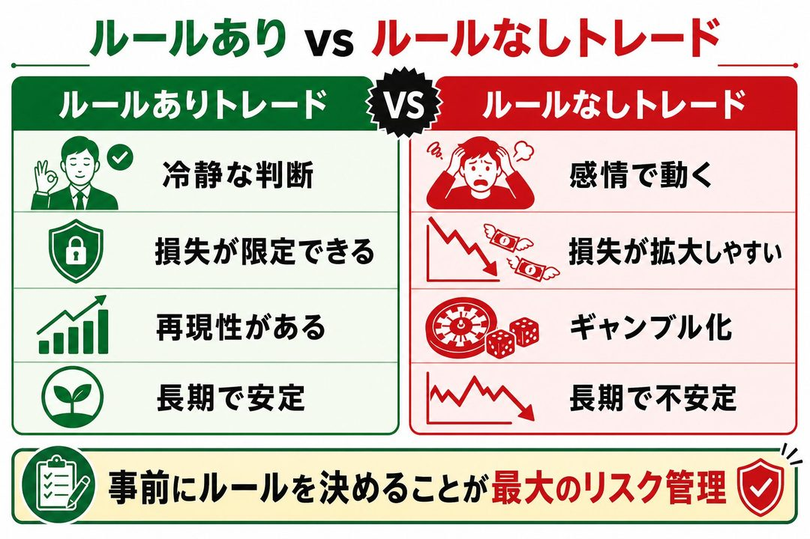
事前ルール設定の重要性
たけるは深くうなずいた。
「学ぶ・守る・増やす——の『守る』部分ですね。
この5つの鉄則を守れば、初心者でも戦える気がしてきた。」
「そう！安心して。
次の章では、この5つの鉄則を踏まえた上で、
カバードコールという安定収入戦略を教えるよ。
これが"増やす"のステージ。」
たけるの目に、新しい光が宿った。
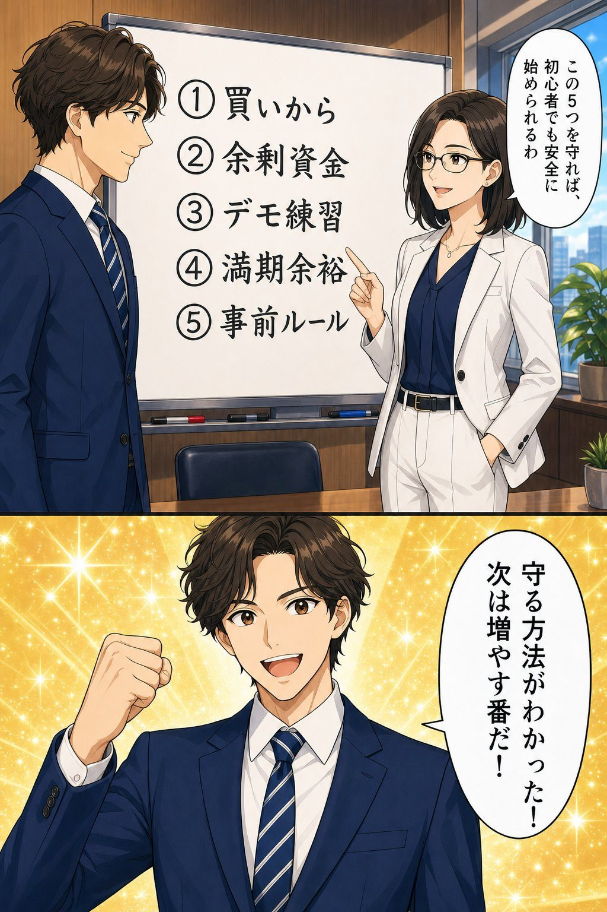
06第5章 カバードコール——「持っている資産が働き始める」
5-1 家賃収入と同じ発想
第5章・カバードコールでの成長と決意
「今日が最後の章。
今まで学んできたことを活かせる、最もシンプルで強力な戦略——カバードコールの話をしましょう。」
たけるは姿勢を正した。
「カバードコールとは、自分がすでに保有している株やETFを担保にして、コールオプションを売ること。
こうすることで、毎月オプションプレミアムを受け取ることができるの。」
「プレミアムを"もらう"側になる……！」
「そう。
一番わかりやすいたとえは、マンション経営。」
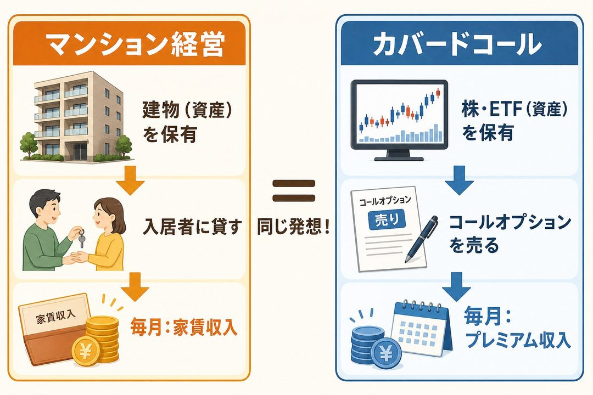
カバードコール＝マンション経営のたとえ
「マンションオーナーは物件（株）を持っているよね。
それを入居者（コール買い手）に貸す（コール売り）。
毎月、家賃（プレミアム）が振り込まれてくる。
株価が大きく上がらない限り、毎月安定した収入が入る仕組みよ。」
「なるほど！資産を持っているだけじゃなく、その資産に稼いでもらう……。
資産を働かせるという感覚ですね。」
「そのとおり。
これが"増やす"ステージの最初のステップ。」
5-2 カバードコールの具体的な仕組み
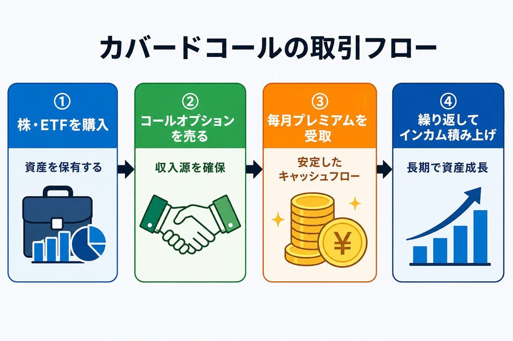
カバードコールの取引フロー
「たとえば、1株1000ドルのETFを100株保有しているとする。
そのETFに対してコールオプション（行使価格1050ドル）を売る。
プレミアムとして1株あたり20ドル受け取れる。
100株なら2000ドルの収入。」
「それが毎月入ってくる……！」
「毎月がんばれば、年間で保有資産の5〜15%程度の追加収益になることも。
ETFの値上がり益に加えて、プレミアム収入も積み上がる。」
「一つのパッシブインカムになるんですね。」
5-3 リスクとトレードオフ——株価急騰時の損失
「でも、デメリットも正直に話しておくね。
株価が急騰したとき——行使価格を大きく超えて上がったとき——その上昇分の利益は取れないの。
コールを売った相手に渡す義務があるから。」
「いくら上がっても、行使価格の1050ドルで売らないといけない……。」
「そう。
これがアップサイドを制限するというデメリット。
でも、それと引き換えに毎月プレミアムをもらえる。
急上昇を狙うか、毎月安定収入を選ぶか——という選択ね。」
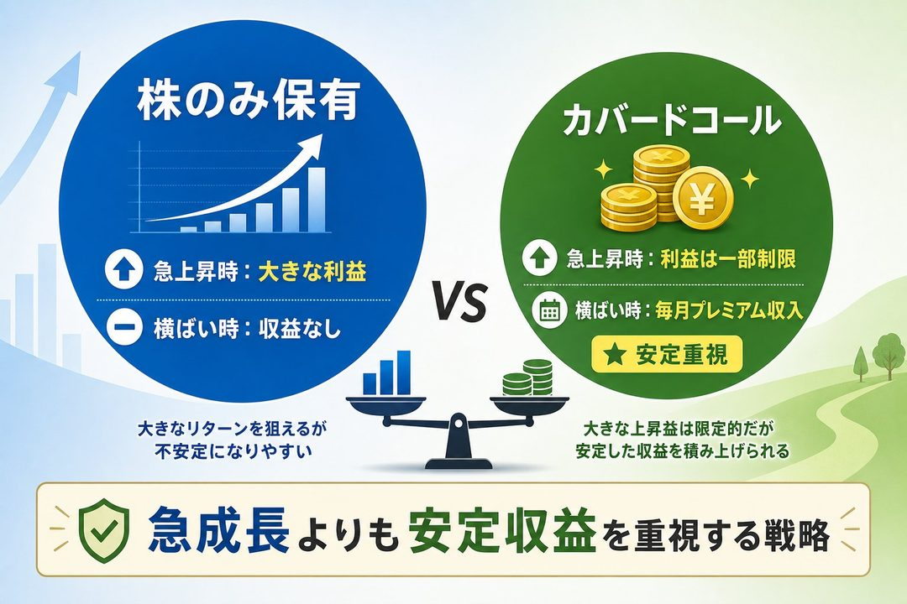
カバードコールのリターン比較
5-4 暴落時の3つの対処法
「最後に——暴落が起きたときのルールを話すわね。
これを事前に決めておくことが、最大のリスク管理になるの。」
たけるは真剣な表情でメモを取り始めた。
「軽い下落（5%以内）の場合——
保有継続。
プレミアム収入が損失をある程度カバーしてくれる。
焦って動く必要はない。」
「しっかりした下落（10〜15%程度）の場合——
コールをいったん買い戻し（損切り）、より低い行使価格で売り直す。
これをロールダウンと呼ぶの。
保有コストを下げながら、新たなプレミアムも確保できるわ。」
「大暴落（20%超）の場合——
感情を切り捨てて撤退。
プレミアム収入では補填できない損失になるから、損切りを徹底する。
事前に『〇〇%下がったら撤退』のルールを決めておくこと。」
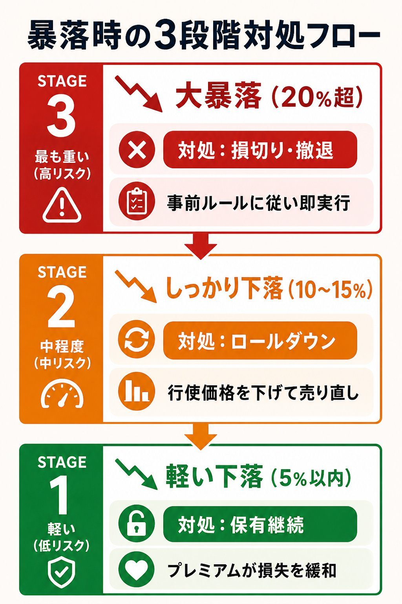
暴落時の3段階対処フロー
「大切なのは——恐怖で動くのではなく、ルールで動くこと。
暴落時に最も危険なのは、感情に振り回されて判断が遅れること。
だから平時に意思決定を済ませておく。」
たけるはしっかりとうなずいた。
「ひとみ先生、最初に話してくれた言葉を思い出しました。
"学ぶ→守る→増やす"——この3ステップ、ようやく全部見えてきた気がします。」
「たける君、ここまでよく学んだね。
コール・プットの基本から、タイムディケイ、リスク管理、カバードコール——
これだけ知っていれば、自分だけの投資戦略が立てられるわ。」
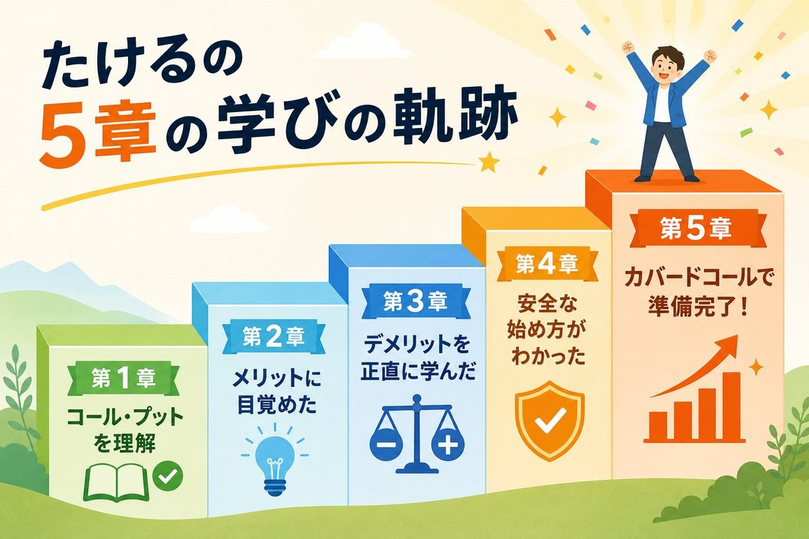
たけるの成長ロードマップ
「自分にも——できる。」
たけるは、静かにそう呟いた。
その言葉には、もう恐怖も迷いもなかった。
ひとみ先生は優しく微笑んだ。
「そうよ。
できる——いや、学べば必ずできるようになる。
大切なのは、少しずつ丁寧に歩くこと。」
窓の外には、夕暮れの東京が輝いていた。
たけるには今、それがどこか違って見えた。
街の一つひとつの明かりが、誰かが資産を育てる場所に見えてきた。
「さあ、まずデモ口座を開いてみよう。」
たけるは力強くうなずいた。
「はい——やってみます！」
07おわりに
「貯金だけでは不安」という感覚は、決して悪いことではない。
それは、自分の未来に真剣に向き合っている証拠だ。
この本でたけると一緒に学んできたことを、もう一度振り返ってほしい。
第1章——オプションは「権利」の取引。
コールは買う権利、プットは売る権利。
コンサートの前売り券と保険のたとえで、仕組みが見えてきた。
第2章——メリットは「少額・下落耐性・損失限定・戦略自由」の4つ。
初心者には「買い」から始めることが最善の選択だとわかった。
第3章——タイムディケイ・売りのリスク・海外特有の壁（為替・税金・業者）。
デメリットを知ることこそが、安全に進む第一歩だった。
第4章——買いから始める・余剰資金で少額・デモ練習・満期余裕・事前ルール。
「守る」5つの鉄則が、リスクを大幅に下げてくれる。
第5章——カバードコールで持っている資産に稼いでもらう。
暴落時の3段階対処法まで知れば、「怖い」が「準備できている」に変わる。
「学ぶ → 守る → 増やす」
この3ステップは、オプション取引だけじゃない。
どんな投資にも、どんな人生の挑戦にも通じる普遍的な知恵だ。
たけるは言った。
「自分にもできる」——と。
それはあなたにも言える言葉だ。
難しい専門用語は覚えなくていい。
完璧なトレーダーになる必要もない。
ただ、少しずつ学び、自分を守り、そして育てていけばいい。
今日、デモ口座を1つ開くこと——それがあなたの第一歩になる。
おわりに・たけるの決意と未来
*この本が、あなたの「怖い」を「わかった」に変えるきっかけになれば、それ以上の喜びはありません。
© 竹谷知悦 / 特別プレゼント版